Kunst
-
Irissen
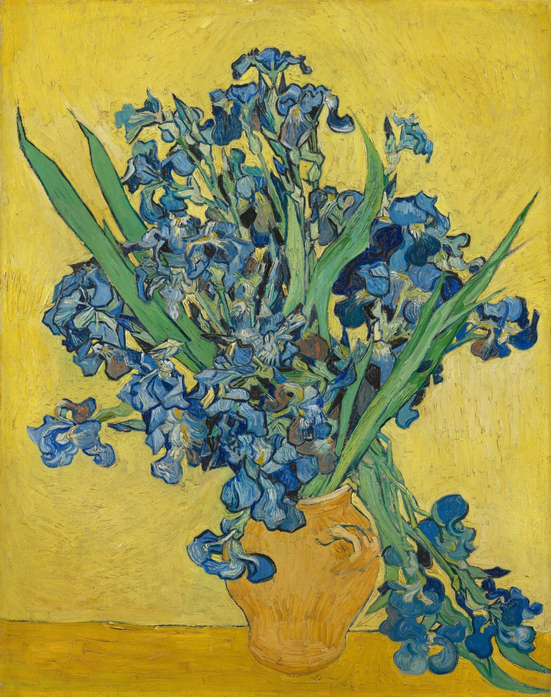He searched for a beautiful colorcontrast. by placing purple flowers against yellow background, decorative shapes Hij zocht naar een krachtig kleurcontrast. Door de paarse bloemen tegen een gele achtergrond te zetten, kwamen de decoratieve vormen extra fel uit. Oorspronkelijk waren de irissen paars. Door verbleking van een rood pigment zijn de bloemen inmiddels blauw geworden. Van Gogh schilderde het boeket twee keer.
Gemaakt in Saint-Rémy-de-Provence.
-
Korenveld Onder Onweerslucht
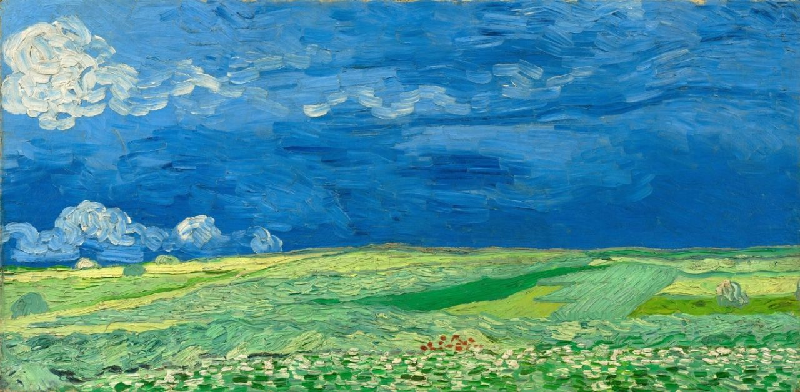In deze landschappen probeerde hij 'triestheid, extreme eenzaamheid’ uit te drukken. De overweldigende emoties die Van Gogh in de natuur ervoer waren echter ook positief. Aan broer Theo schreef hij: ‘ik weet bijna zeker dat ik in die doeken datgene heb verwoord wat ik niet in woorden uit kan drukken, nl. hoe gezond en hartversterkend ik het platteland vind’. Dit was gemaakt in zijn laatste weken.
Gemaakt in Auvers-sur-Oise.
-
Spittende Boerin
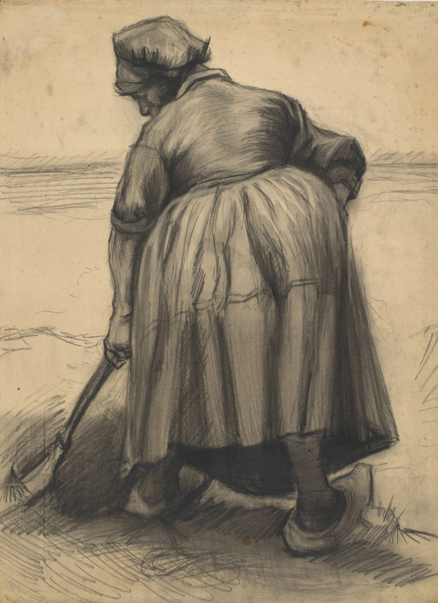Lange tijd worstelde Van Gogh met de weergave van figuren: ze zagen er te plat uit. In 1885 ontdekte hij dat hij ze moest opbouwen uit grote ronde vormen in plaats van uit contouren. Deze potige boerin is daar een geslaagd voorbeeld van. De proporties zijn weliswaar niet correct, maar dit deed Van Gogh met opzet. Zo wilde hij de expressie van de tekening vergroten.
Gemaakt in Nuenen.
-
Worn Out
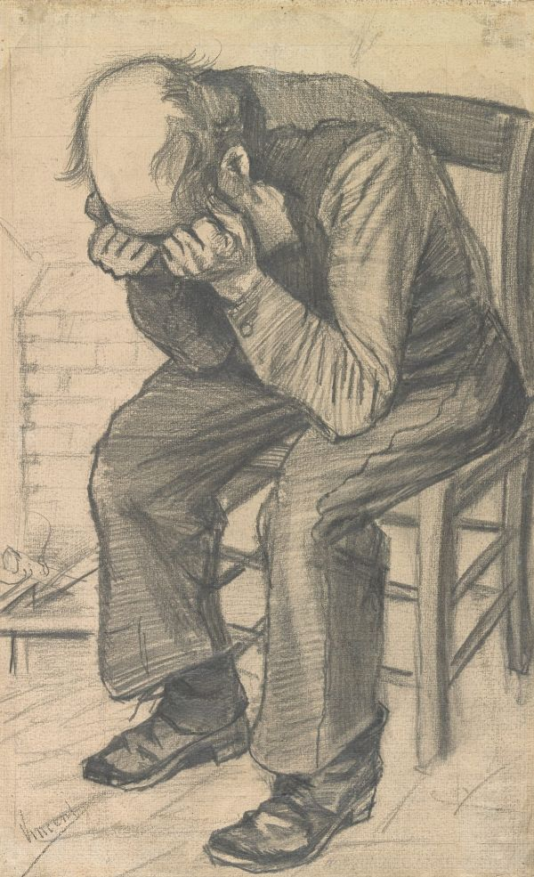‘Wat is zoo´n ouden werkman in zijn gelapt bombazijnen pak met kalen kop toch mooi’, schreef Van Gogh over deze tekening. Hij had een voorkeur voor volkse figuren, die door het leven getekend waren. Met de titel Worn out (uitgeput) benadrukte hij de dramatiek van de voorstelling.
Gemaakt in Den Haag.
-
De oude kerktoren te Nuenen
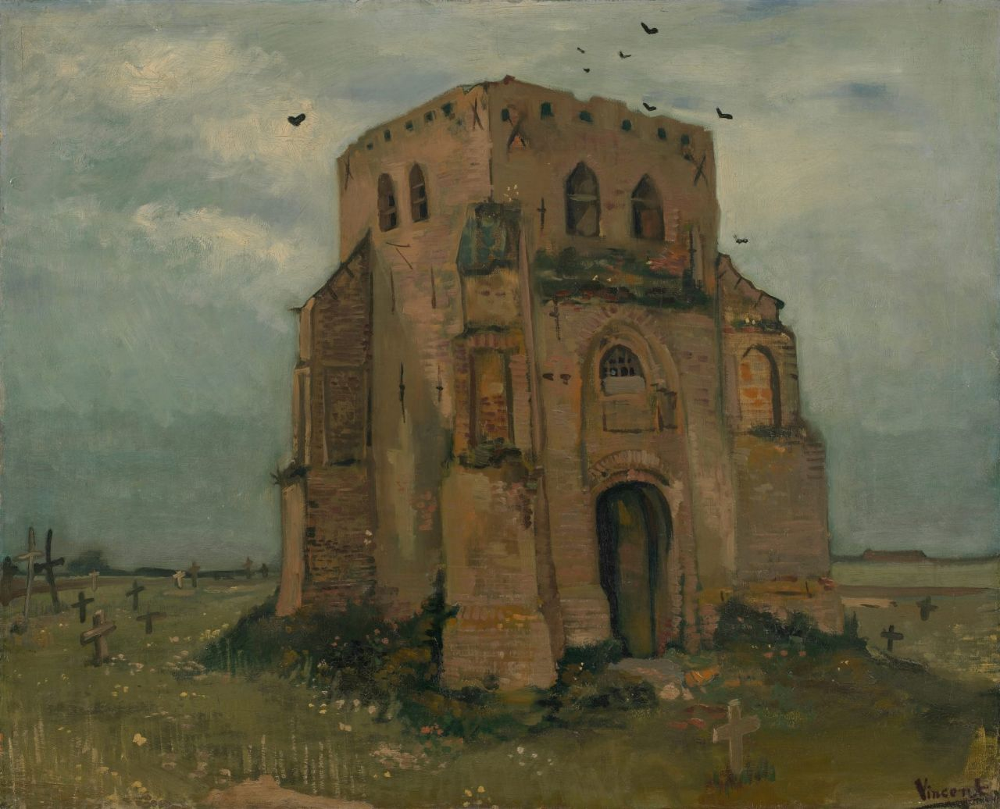Van Gogh woonde dichtbij deze verlaten kerktoren in Nuenen (Noord-Brabant). De toren was blijven staan toen de kerk een eeuw eerder instortte, maar werd nu afgebroken. De torenspits is er hier al af. Boeren werden begraven in dezelfde grond die zij tijdens hun leven bewerkten. Daarom stond hun leven juist in het teken van eeuwigheid en wedergeboorte.
Gemaakt in Nuenen.
-
Kop van een vrouw
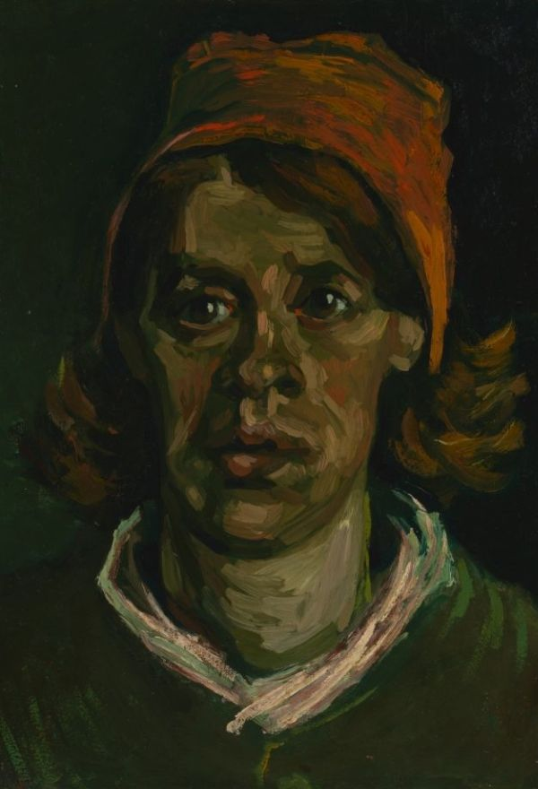Deze vrouw is Gordina de Groot, die met haar familieleden poseerde voor De aardappeleters. Ter voorbereiding op dat schilderij maakte Van Gogh ruim 40 studies van boerenkoppen, waaronder deze. Zo hoopte hij beter te worden in het schilderen van figuren. Van Gogh wilde de boeren laten zien als een specifiek type mens, dat al eeuwen op het land ploetert. ‘Zij doen denken aan de aarde, schijnen er soms uit gemodeleerd te wezen’, schreef Vincent aan zijn broer Theo.
Gemaakt in Nuenen.
-
Portret van een oude vrouw

Het grijze haar van de oude vrouw komt onder de witte muts uit. Van Gogh hield van dit soort mutsen, die mooi contrasteerden met donkere kleding en achtergronden. Met grove streken gaf Van Gogh de schaduwen in het gezicht aan.
Gemaakt in Antwerpen
-
Gezicht op Parijs

Vanaf de heuvel van Montmartre schilderde Van Gogh het uitzicht op Parijs in zuidelijke richting. Hij creëerde diepte in de compositie door de voorgrond met schoorstenen en daken van dichtbij af te beelden. Meer naar achteren zijn de contouren van monumentale gebouwen in het stadscentrum te zien; ze zijn allemaal geïdentificeerd.
Gemaakt in Parijs
-
Zelfportret met grijze vilthoed
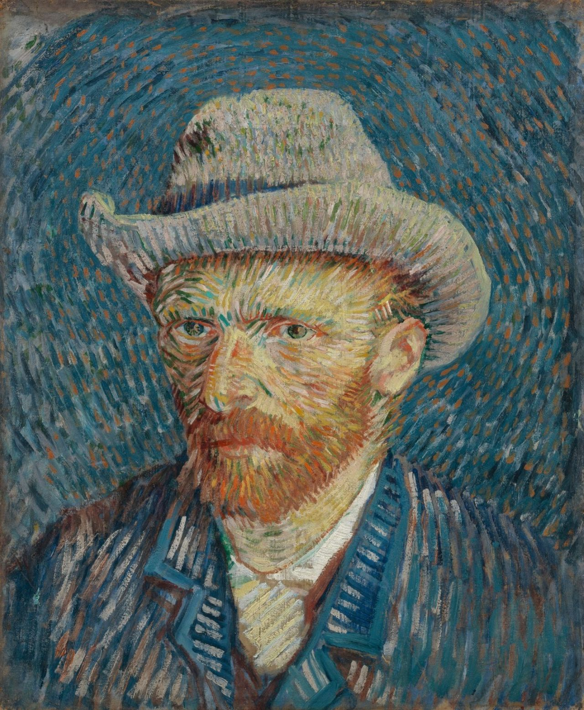Van Gogh schilderde dit zelfportret in de winter van 1887-1888, toen hij al bijna twee jaar in Parijs woonde. Het werk laat zien dat hij de stippeltechniek van de pointillisten had bestudeerd en op zijn eigen, originele manier toepaste. De streepjes verf zijn in verschillende richtingen geplaatst. Ze volgen de omtrek van zijn hoofd en vormen zo een soort aureool.
Gemaakt in Parijs
-
In het café
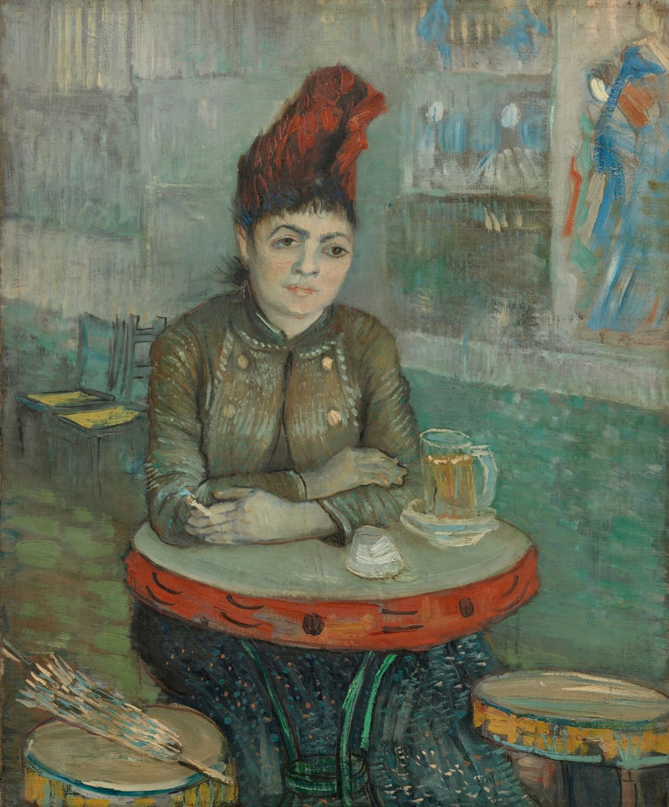Agostina Segatori was de eigenaresse van café Le Tambourin. Van Gogh had korte tijd een verhouding met haar. Op tafel staat een glas bier, en in Agostina’s hand smeult een sigaret. De schoteltjes onder het glas verraden dat ze al een biertje op had. Drinken en roken in een café was ongepast voor nette dames, dat was meer iets voor artistieke types of prostituees.
Gemaakt in Parijs
-
Montmartre
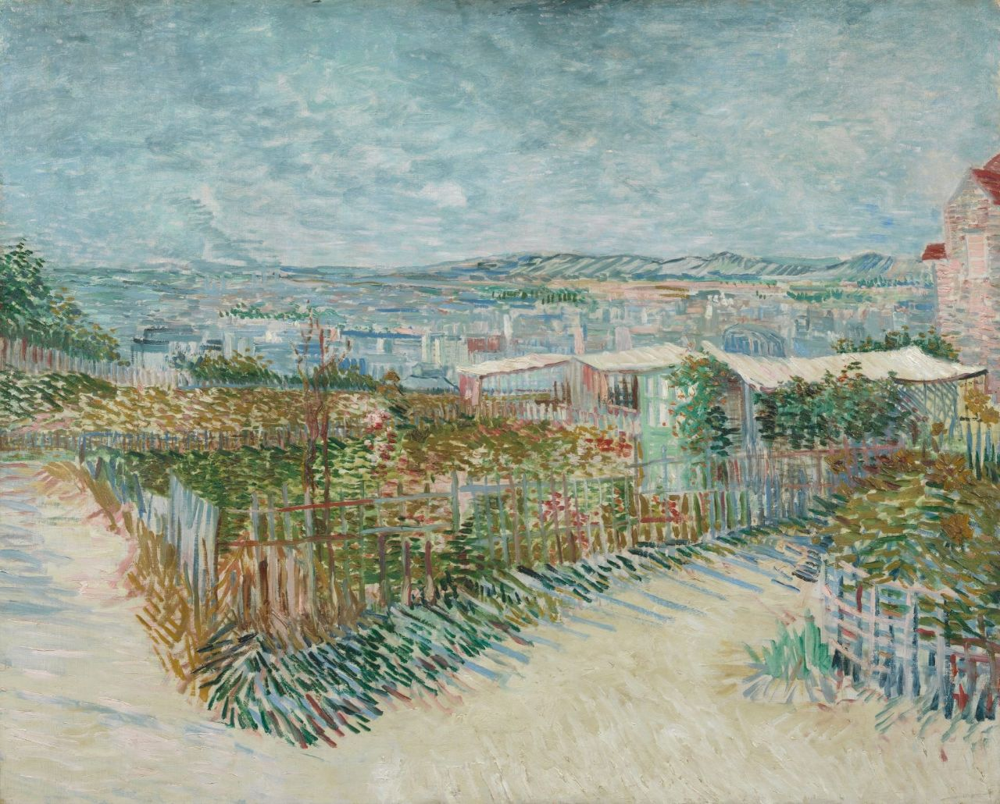Dit is een van de grootste landschappen in Van Goghs oeuvre. Hij koos een onderwerp dicht bij huis, de heuvel van Montmartre in Parijs, en schilderde het uitzicht richting het noordwesten. In de verte zijn de heuvels van Meudon zichtbaar. Op de voorgrond liggen moestuintjes.
Gemaakt in Parijs
-
Karaf en schotel met citrusvruchten
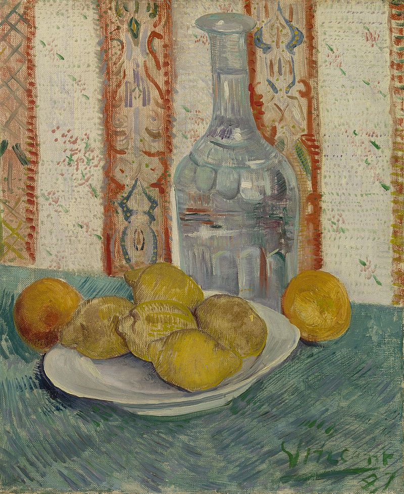Het schilderen van een glazen voorwerp is lastig. Van Gogh maakte de uitdaging nog groter: hij koos een bewerkte karaf én decoratief behang. Daardoor kreeg hij te maken met de weergave van kleurrijke reflecties.
Gemaakt in Parijs
-
Zelfportret als schilder
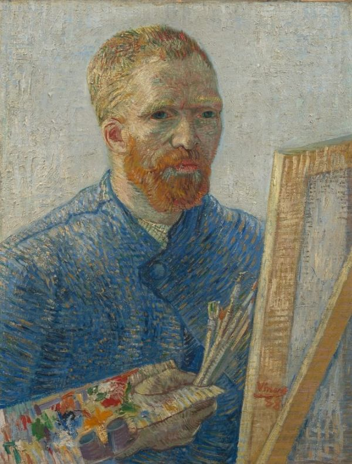Zelfportret als schilder was het laatste werk dat Van Gogh in Parijs maakte. De stad had hem geestelijk en lichamelijk uitgeput. Aan zijn zus Wil beschreef hij hoe hij zichzelf had afgebeeld: rimpels in voorhoofd en om den mond, stijf houterig, een zeer rooden baard, vrij ongeredderd en triest.
Gemaakt in Parijs.